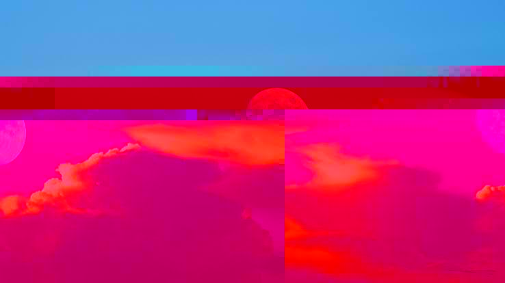
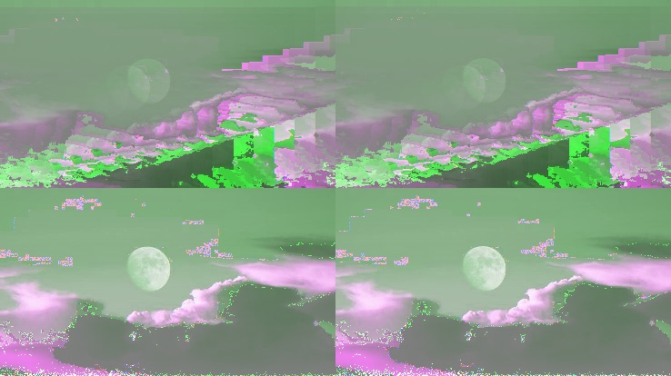

The glitched moon series is inspired by media seemingly being corrupted or glitched by strange or supernatural means. I chose to use the moon to portray this because I felt that the moon held a significant place in folklore and mythology, as well as sometimes being used in analog horror or ARGs like Local 58.


